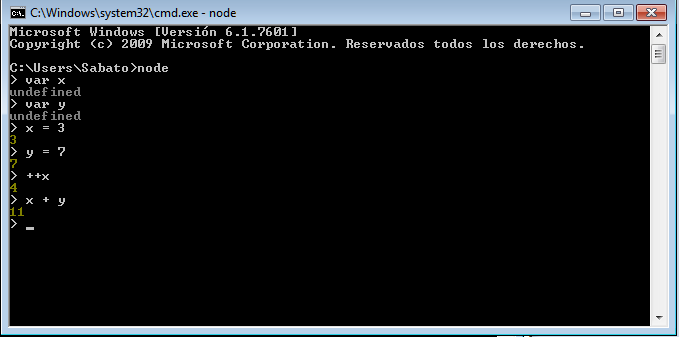
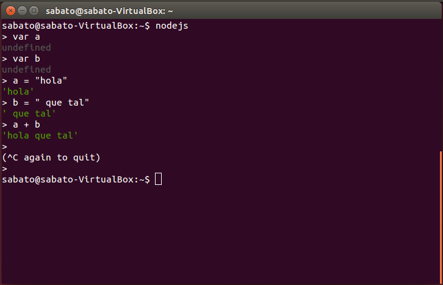

Tutorial instalación nodeJs
Instalación en windows:
- Descargar el instalador de la página: www.nodejs.org
- Ejecutar e instalar.
- Abrir una terminal.
- Ejecutar con el comando
node
Instalación en Linux
- Ejecutar:
sudo apt-get update
sudo apt-get install nodejs
sudo apt-get install npm
*Utilizar con el comando nodejs
